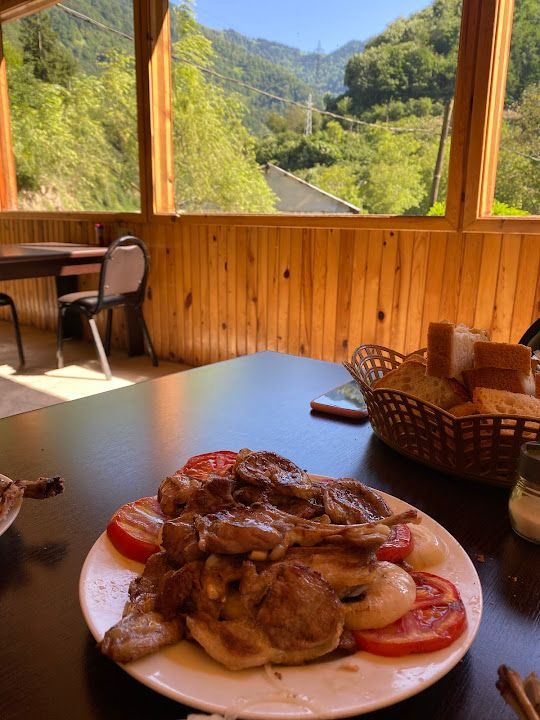
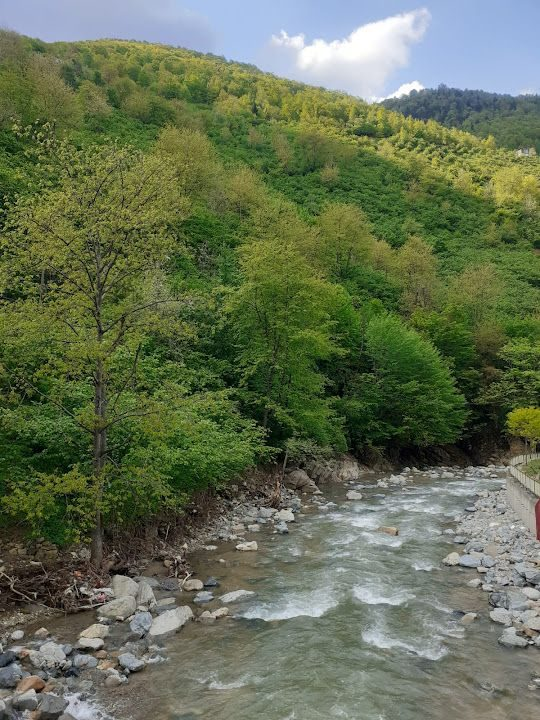
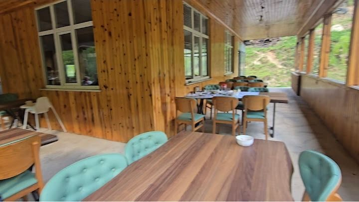
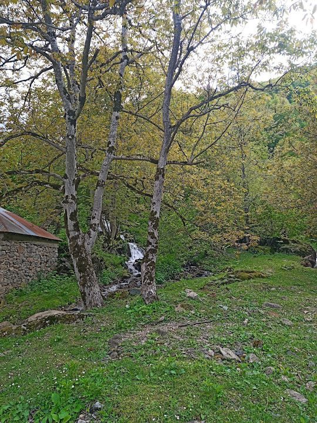
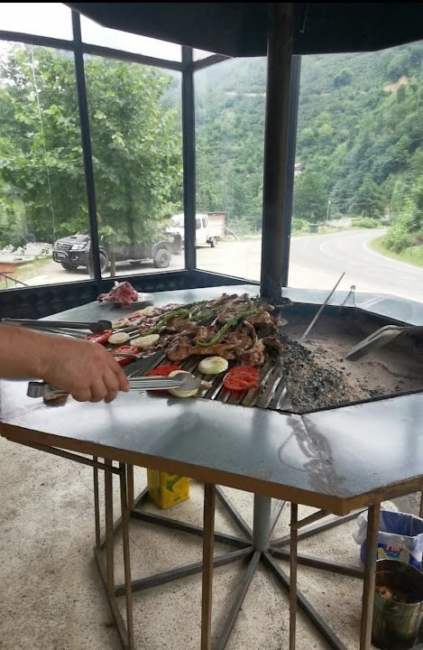
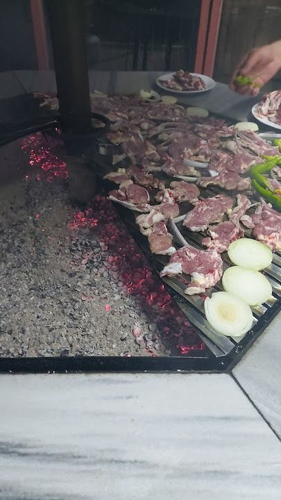
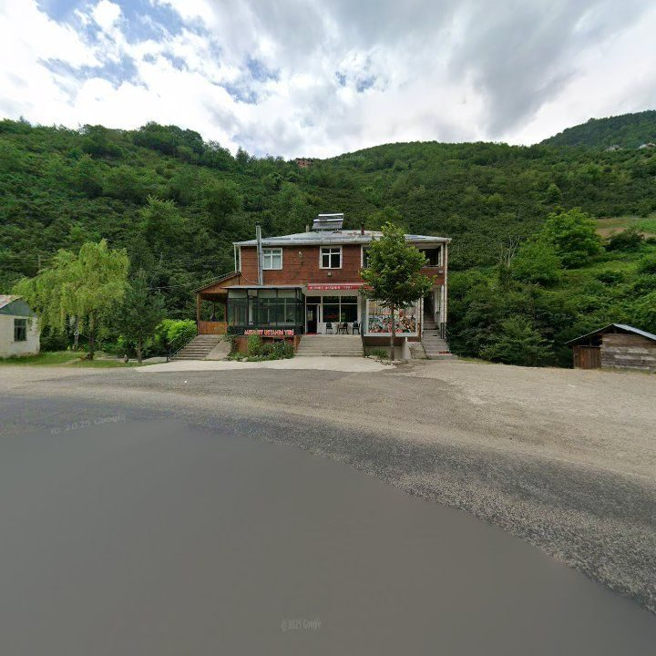
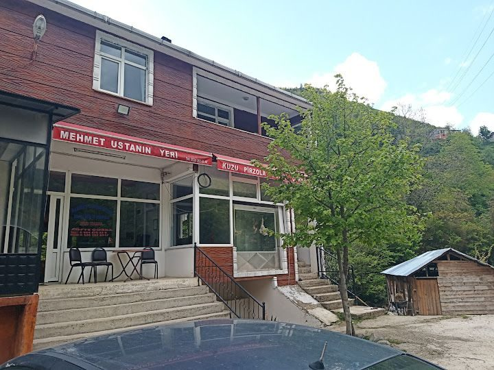

Kuzu Pirzola
Restoran adını bu yemekten alıyor. Misafirlerin yorumlarında da en çok o geçiyor: kimi "hayatımda en güzel kuzuyu burada yedim" diyor, kimi Doğu Karadeniz'de yediği en iyi pirzola olarak anıyor.
Yağlıdere · Giresun
Yağlıdere'de Kuzu Pirzolanın Lezzetli Adresi
Ocakta Mehmet Usta, hemen yanında dere. Yağlıdere'nin yeşili içinde kuzu pirzola ve köfteyle kurulan sade, doyurucu bir sofra.
Neden Mehmet Usta?
Restoran adını bu yemekten alıyor. Misafirlerin yorumlarında da en çok o geçiyor: kimi "hayatımda en güzel kuzuyu burada yedim" diyor, kimi Doğu Karadeniz'de yediği en iyi pirzola olarak anıyor.
Etler ocak başında Mehmet Usta'nın elinden geçiyor. Gelenlerin tarifiyle: işinin ehli, etin nasıl pişirileceğini iyi bilen biri. Pişme derecesini ustaya kendiniz de söyleyebilirsiniz.
Mollo mevkiinde, derenin hemen kenarında. Yemyeşil yamaçlar, açık hava bölümü ve yemek boyunca kulağınızda su sesi.
Güler yüzlü karşılama, hızlı servis. Çocuklarla, kalabalık bir grupla ya da tek başınıza rahatça oturabileceğiniz, sakin bir mola yeri.

Kuzu Pirzola
İyi bir kuzu pirzolanın fazla söze ihtiyacı yok. Ocaktan sıcak çıkar, yanında közlenmiş domates ve soğanla masaya gelir; gerisini ilk lokma anlatır.
Pirzola kiloyla sipariş ediliyor. Misafir yorumlarında en çok geçen ölçü bir buçuk kilo; yanına köfte ve salata eklemek de bir o kadar yaygın.
Menüyü Gör“Mehmet Usta, işinin ehli ve etin nasıl pişirileceğini gayet iyi bilen biri. Yeri oldukça uzak ama gitmeye değer.”
G***** G***** · Google yorumu, Ekim 2025
Hakkımızda
Mehmet Usta'nın Yeri, Yağlıdere'nin Yeşilpınar Köyü'nde, Mollo mevkiinde. Yayla yoluna çıkanların, Giresun'a yolu düşenlerin uğrak yeri. Hemen yanından dere akıyor; geniş camlı salonda da açık havada da yeşil hep göz hizasında.


“Etler gayet lezzetli, manzara ve yanında akan derenin sesi hoş.”
M****** A**** · Google yorumu



Ocak Başı
Pirzola, köfte, sivri biber, domates ve soğan aynı altıgen ocakta pişiyor. Ocak, salonun camlı köşesinde; et çevrilirken dışarıda vadi görünüyor.
Etinizi nasıl sevdiğinizi söylemekten çekinmeyin. Misafirlerden birinin tavsiyesi tam olarak bu:
“İşi ustaya bırakmayın, sevdiğiniz şekil et isteyin, sonra tadını çıkarın.”
A*** A*** B***** · Google yorumu
Fotoğraflar
Hepsi Mehmet Usta'nın Yeri'nde, misafirlerimizin objektifinden. Büyütmek için fotoğrafa dokunun.
Misafir Yorumları
“Kuzu pirzolası ve köftesi oldukça lezzetli. Hatta Doğu Karadeniz yöresinde yediğim en iyi kuzu pirzola diyebilirim.”
“Hayatımda en güzel kuzuyu burda yedim. Mehmet usta da işinde ve esnaflığında çok iyi. Köftesi de çok güzel. Hızlı servis uygun fiyat. Hemen dere kenarı manzaralı.”
“Kuzular çok lezzetliydi, ırmağın kenarında çok hoş bir yer. Etleri pişiren usta kesinlikle bu işi yapıyor. Mekan sahibi çok ilgili ve güler yüzlü bir beyefendi.”
“Giresuna ve Yağlıdereye gelirseniz uğramadan gitmeyin, efsane mekan. Mehmet Ustanın ellerine sağlık, yapıyor bu işi.”
“Temiz hava ve kuzu pirzola müthişti, gitmenizi tavsiye ederim.”
“Bölgeye gitmişseniz bir çay için bile olsa uğramanızı tavsiye ederiz. Derenin yanında güzelim manzarası, mutfağı ve güler yüzüyle uğrak yeriniz olabilir.”
Bize uğradınız mı? Deneyiminizi Google'da paylaşın; yolu düşecek başka misafirlere yol göstersin.
Yorumlar Google kullanıcılarına aittir ve restoranim.net üzerinden alınmıştır. Uzun yorumlar kısaltılmış, ifadeler değiştirilmemiştir.
Konum
Restoran Yağlıdere merkezinin dışında, köy yolu üzerinde. Bir misafirimizin dediği gibi: “Yeri oldukça uzak ama gitmeye değer.” Önünde ücretsiz park yeri var.
Yola çıkmadan 0536 262 03 47 numarasını arayıp siparişinizi verin; vardığınızda etiniz hazır olsun.

